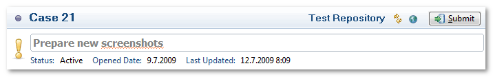
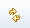
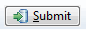

Foglyn User Guide > Editing FogBugz Cases > Case Editor: Header


Case Editor: Header

Case Editor Header contains summary of case together with some buttons to activate case, open case in browser or synchronize case with FogBugz.
- Activate/Deactivate — Toggles the activation and deactivation of the task.
- Case number
- Repository Label — Name of repository this case is coming from
- Synchronize Incoming Changes  — Fetch latest changes from FogBugz repository. This button does not send local changes to FogBugz server!
- Open with Browser — Open case in browser
- Submit  — Submit local changes to the FogBugz server
- Priority — Priority of the case. See Mylyn priority vs. FogBugz priority
Bottom part of header contains editable title of the case (with spell checking), its status and date when case was opened and last updated.
Related Topics: